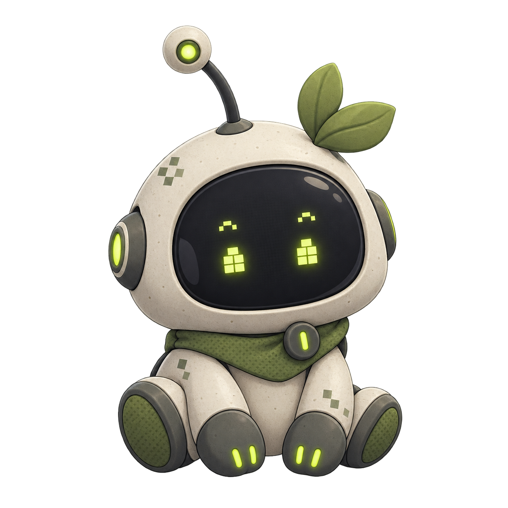

Sorry, it looks like your agent is offline.
Start NusaShell again, then keep this page open. We’ll reconnect automatically.
Your visible conversation stays on this device.Start a conversation
Ask anything. The agent can use skills, memory, docs and your MCP servers as tools.
Skill library
Reusable instruction packs the agent can load via skill_run.
Catalog
0 skillsSkill tree
No skill selectedNo file selected
Plugins
Manage native MCP servers and installed plugins, including plugins with their own UI.
AI providers
Chat backends for the Agent composer, plus spawn-only ACP subagents the parent agent can delegate to.
Generic command + args agents. They never appear in the composer — the parent agent spawns them via subagent.
Memory & knowledge graph
Search accumulated memory entries, explore the knowledge graph, and review what autolearn saved.
Results
0Knowledge graph
Pipelines & schedules
Run workspace pipelines, durable once/every/when automations, and inspect waiting or blocked runs.
Workflows
0Detail
Activity log
Runtime events streamed live from the shell.
Activity
Token usage, spend, and caching across all conversations.
Usage by model
Top models
Token breakdown
Prompt token caching
Request volume by model
Top providers
Settings
Control how this local NusaShell instance connects, runs agent turns, and presents the workspace.
Agent runtime
Choose the default model and guard how much work one agent turn can perform.
Vision fallback
When the active chat model cannot see images, NusaShell can describe attached images using a separate vision-capable model so the conversation continues without errors. Pick any model that supports image input.
Audio fallback
When the active chat model cannot hear audio, NusaShell can transcribe or describe attached audio files using a separate audio-capable model so the conversation continues without errors. Pick any model that supports audio input.
Video fallback
When the active chat model cannot see video, NusaShell can describe attached video files using a separate video-capable model so the conversation continues without errors. Pick any model that supports video input.
Web Answer
Configure a web-grounded answer provider for the web_answer tool. This is separate from your chat providers — pick a supported vendor and enter its API key. The key is stored securely in the credential store, not in settings JSON.
Context compaction
Tune context compaction and provider prompt caching.
Sampling parametersOverride provider defaults. Leave blank to use provider default.
Appearance
These preferences are stored in this browser, not sent to your agent.
Connection
The Go shell uses HTTP RPC for commands and WebSocket for live events.
System
Useful local diagnostics. This browser version does not manage desktop tray or login startup.
- Version
- —
- Data directory
—- Transport
- —